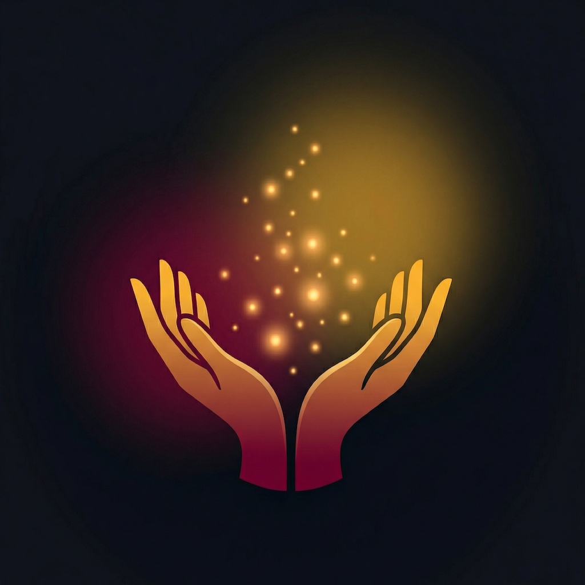

Your community, always within reach.
Bethune-Cookman University
HBCU C² App Design Challenge 2026
Daytona Beach neighborhoods classified as food deserts
UF/IFAS Extension, 20201 in 5 children in Volusia County are food insecure
Feeding America, Map the Meal Gap72.9%
of students at 4 southeastern HBCUs reported food insecurity
Duke et al., J. of American College Health, 2021BCU opened "Mother Mary's Market"
Campus food pantry with Second Harvest Food Bank
Central Florida Public Media, Feb 2025But no app connects residents to surplus food or local events
Food pantries help, but technology can bridge the gap for the whole community
In 1904, she founded Bethune-Cookman University with $1.50 and a mission. To lift her community through education and service. Over a century later, the neighborhoods around her university still need help.
"From her hand to yours."
Community Well-Being
How can technology connect our community to fight food insecurity together?
Build an app connecting our community to food, events, and AI assistance
Neighbors, students, and local businesses share surplus food on a community map. Anyone can claim what they need.
Volunteer opportunities from BCU, local nonprofits, food banks, and Daytona Beach organizations. All in one place.
AI-powered meal planning and storage tips for families and students making the most of what they have.
Switching to the live app on the simulator.
Features to walk through during live demo
Color Palette
Tech Stack
Design Principles
+ 6 more built in
Starting in the neighborhoods around BCU, Mary's Hand connects the Daytona Beach community first. Then grows outward to serve Volusia County and beyond.
Your community, always within reach.
Built at Bethune-Cookman University